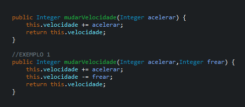
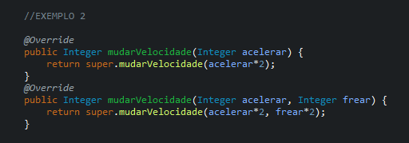
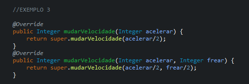

Polimorfismo
O Polimorfismo tem como definição a multiplicidade e mutabilidade de métodos e objetos. De acordo com o dicionário a palavra significa: A qualidade ou estado de ser capaz de assumir diferentes formas. Pode-se observar o uso dessa palavra na Química (átomos alótropos), na Medicina (o polimorfismo genético e do DNA) e em várias outras áreas.
Na ciência da computação o polimorfismo se marca como a técnica da qual os programadores selecionam e distinguem as funcionalidades de certo sistema, utilizando-as de forma dinâmica no decorrer de sua execução. Com o Polimorfismo, os mesmos atributos e objetos podem ser reutilizados em objetos distintos, por meio da herança, porém, podendo ter implementações lógicas diferentes. É uma ótima prática de programação, pois, com a versatilidade e variedade de opções, em muitos casos podem resumir várias linhas de código em apenas um único comando, além de tornar cada classe filho diferenciada, em relação aos métodos herdados da classe pai.
Pode-se dividir o polimorfismo em 2:
-
Polimorfismo Estático ou Sobrecarga;
-
Polimorfismo Dinâmico ou Sobreposição;
Polimorfismo Estático ou Sobrecarga

O Polimorfismo Estático se dá quando temos a mesma operação implementada várias vezes em uma mesma classe, adaptando cada uma para sua respectiva variação.
Como no @EXEMPLO 1 na classe @carro, em que o mesmo método @mudarVelocidade é reescrito como uma nova função, estendendo a função original.
Essa sobrescrição é feita com a adição de um novo parâmetro @frear, pode-se obter o mesmo efeito, em Java, com a mudança
do tipo de parâmetro ou a mudança do tipo de retorno
Polimorfismo Dinâmico ou Sobreposição
Já o Polimorfismo Dinâmico se dá quando é criada uma segunda classe filha que estende as propriedades da classe pai.
Pode-se observar esse tipo de Polimorfismo no @EXEMPLO 2 e @EXEMPLO 3 nas classes @carroDeCorrida e @caminhao respectivamente.
Nesses casos, os métodos foram mudados para atender as requisições de cada classe.
No carro de corrida os valores velocidade e a freenagem são dobrados, já no caminhão os mesmos perdem metade do valor

